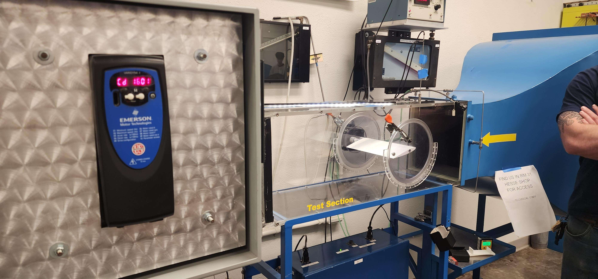

This experiment investigated the aerodynamic lift characteristics of an unknown airfoil profile using wind tunnel testing. The goal was to determine the relationship between coefficient of lift (Cₗ), angle of attack, and Reynolds number, and to compare experimental results against classical aerodynamic theory.
The objective was to characterize the lift behavior of an unknown airfoil by experimentally measuring lift forces across a range of angles of attack and flow velocities, and then computing lift coefficients under varying Reynolds numbers.
Raw sensor outputs were calibrated using linear and polynomial regression models to convert voltage signals into physical quantities such as force, pressure, and velocity. Uncertainty propagation was applied to account for measurement error from sensors, calibration fits, and geometric parameters.
The airfoil demonstrated symmetric lift characteristics, indicating balanced aerodynamic performance. While limited by wind tunnel velocity constraints, the results align closely with theoretical expectations for symmetric airfoil behavior in low Reynolds number regimes.